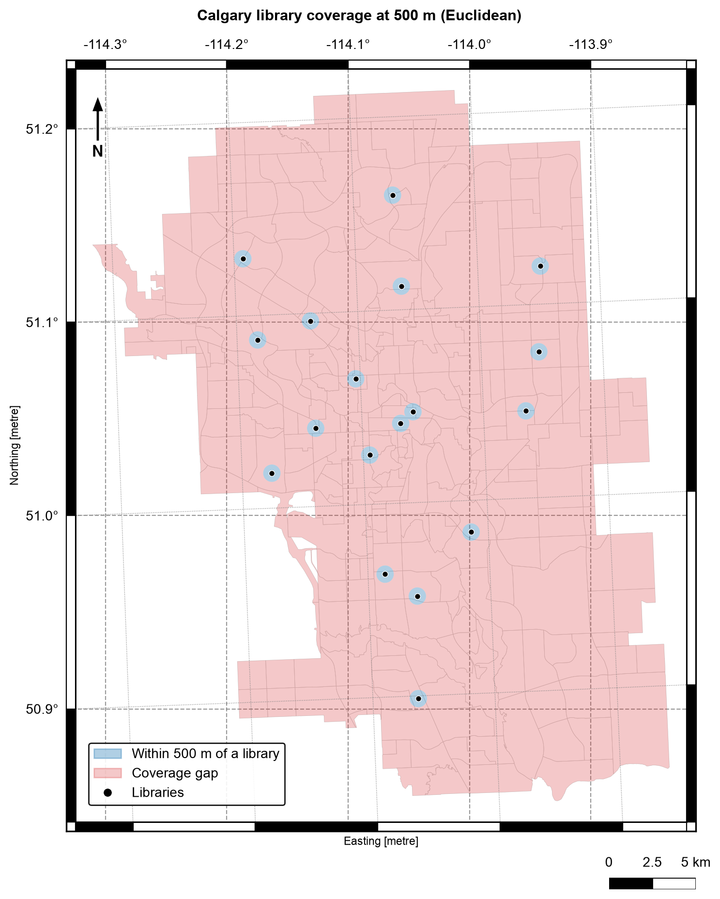

4.5. Applied Spatial Analysis Workflows#
4.5.1. Learning objectives#
By the end of this section, you should be able to:
plan a spatial analysis as an auditable sequence of operations;
name the unit of analysis and track how each stage changes what a row means;
combine measurements, buffers, joins, and overlays in one workflow;
distinguish coverage share, covered units, and distance to service as separate measures;
quantify coverage and identify coverage gaps; and
summarize findings with a map and a table that can be checked, stating the threshold and the limitations.
Section goal
Apply the S01–S04 building blocks end to end on two Calgary questions: how park sites are distributed across community districts, and how well libraries serve the districts as Euclidean coverage. Each workflow states its unit of analysis and validates every stage.
4.5.2. Plan the analysis before coding#
An applied analysis is a chain of operations, and each link can change the answer without raising an error. Two habits keep the chain auditable: name the unit of analysis, and check every stage.
The unit of analysis is the thing that one row of the final table describes, here a community district. Every stage changes what a row means, which is its grain. Sampled parks have one row per park, a spatial join gives one row per park–district pair, an overlay gives one row per piece, and a summary gives one row per district. Count both the rows and the distinct units after each stage, because the two can move in opposite directions: fan-out raises the rows while a silent drop lowers the distinct units. Table 4.18 lists what to check at each kind of stage.
Stage |
What can go wrong |
Check |
|---|---|---|
Load and parse |
Swapped coordinates, missing geometry |
Bounds, CRS, |
Reproject |
Areas or distances taken in degrees |
Equal CRSs, projected units |
Repair |
Invalid rings break joins and overlays |
|
Join |
Fan-out, unmatched rows |
Rows against left rows, duplicated identifiers, null right columns |
Overlay |
Units dropped, slivers, wrong areas |
Distinct units, area identities, smallest pieces |
Buffer and dissolve |
Distance in the wrong units, overlapping zones |
Radius in metres, hand-checked area |
Summary merge |
Districts lost or duplicated |
|
The toy example chains the stages of Workflow A on three parks and two districts and logs the grain after each stage. Park P1 lies in district D1, P2 straddles D1 and D2, and P3 lies outside both.
unmatched parks after the join: 1
| stage | rows | distinct units | area (m²) | |
|---|---|---|---|---|
| 0 | parks | 3 | 3 | 3400.0 |
| 1 | join (intersects) | 4 | 3 | 5000.0 |
| 2 | overlay (intersection) | 3 | 2 | 2500.0 |
| 3 | district summary | 2 | 2 | 2500.0 |
| district | parks | park_area_m2 | |
|---|---|---|---|
| 0 | D1 | 2 | 1700.0 |
| 1 | D2 | 1 | 800.0 |
Read the log from top to bottom. The join raises the rows from 3 to 4 because P2 matches two districts, yet it keeps all 3 parks and reports P3 as unmatched. The overlay then drops P3 without a message, because P3 has no intersection to return, so the distinct parks fall to 2 and the area falls from 3,400 to 2,500 m². The area after the join is 5,000 m², more than the parks really cover, because a left join repeats P2’s whole geometry for each match. None of this is an error, and none of it is visible unless the log is printed. The Calgary workflows below repeat the pattern: state the unit, then print counts and totals at each stage.
4.5.3. Workflow A: park distribution across community districts#
Question. Which community districts contain the most park area, and which sampled park sites cross district boundaries?
Plan. The unit of analysis is the community district. Load parks, districts, and the city boundary [Open Calgary: The City of Calgary Open Data Portal, 2026]; validate geometry; reproject to a metric CRS; join park sites to districts spatially; overlay to measure the shared area; then summarize per district. Table 4.19 lists the steps and where each is covered.
Step |
Operation |
Section |
|---|---|---|
Load and parse layers |
|
S01 |
Validate types, CRS, validity |
inspection assertions |
S01, S06 |
Metric measurements |
|
S02 |
Assign parks to districts |
|
S03 |
Split shared areas |
|
S04 |
Summarize per district |
|
S03 |
One district polygon has a self-intersecting ring, so the workflow repairs it explicitly before the join and overlay stages; S06 covers this pattern in detail.
layers aligned on EPSG:32611
4.5.3.1. Assign parks to districts#
Both layers are polygons, so the predicate decides what counts as belonging. within
keeps only parks that lie entirely inside one district and silently loses every park that
straddles a boundary. intersects keeps every park that touches a district and returns
one row per district it touches. This workflow needs to see the boundary-crossing parks,
so it uses intersects and expects more rows than parks, as in S03.
The spatial join attaches each park site to the district containing it. Reporting the unmatched count keeps boundary cases visible instead of letting them disappear.
sampled parks: 300
assignment rows: 334
parks crossing district boundaries: 34
parks outside every district: 1
The join returns 334 rows for 300 parks. The printed 34 counts the extra rows, not the parks: a park that touches three districts adds two. The number of distinct parks that match more than one district can be smaller, and it also includes parks that only touch a boundary, which the overlay below turns into zero-area pieces. The index of the left layer identifies each park, so counting its repeats gives the park-level answer.
extra rows created by the join: 34
distinct parks matching more than one district: 27

4.5.4. Workflow B: library coverage and gaps#
Question. Which districts lie within a 500-metre Euclidean service zone of a library, and which have no library at all?
Plan. The unit of analysis is again the community district. Buffer the library points in a metric CRS, dissolve the buffers into one coverage geometry, then use an overlay to compare coverage against the district layer. A district with no library is not the same as a district outside the coverage zone — the two results answer different questions and are reported separately.
4.5.4.1. Three ways to measure coverage#
“How well are districts served?” is several questions, and each needs its own measure [Geurs and Van Wee, 2004]. Table 4.20 separates them so that results are not mixed up.
Measure |
Question it answers |
Operation |
Limitation |
|---|---|---|---|
Coverage share |
What fraction of the city lies within 500 m of a library? |
|
Ignores where people live |
Covered districts |
Which districts have a representative point inside a zone? |
|
One point stands in for a whole district |
Distance to service |
How far is each district from its nearest library? |
|
Straight-line, not a route |
Gap area |
Where is no service available? |
|
Depends entirely on the threshold distance |
Dissolving the buffers into one geometry means a point can match at most one coverage feature, which keeps the covered flag to one value per district.
combined 500 m coverage: 14.1 km²
city boundary area: 852.9 km²
nominal coverage share: 1.7%
A hand check supports the number. A 500 m buffer around one point covers about π × 0.5² ≈ 0.785 km², and 18 branches give roughly 14.1 km². That matches the combined coverage, so the buffers hardly overlap. The share is nominal: it divides the buffer area by the city area, even though buffers near the edge can extend past the boundary.
4.5.4.2. Distance to the nearest library#
Buffer coverage is a binary inside/outside answer. A distance field keeps the gradation: districts whose representative point is far from any branch flag where a Euclidean service model is weakest. The representative point (S02) is used because it is guaranteed to fall inside its district, unlike a centroid. It stands in for the district in a screening distance and is not a population location.
NAME Library distance_to_library_m \
228 12L Glenmore Square Library 12831.929758
235 12J Shawnessy Library 12808.745416
240 HOTCHKISS Glenmore Square Library 11278.563521
225 RANGEVIEW Shawnessy Library 10444.122530
233 12C Glenmore Square Library 10129.055787
239 RICARDO RANCH Shawnessy Library 10065.325786
238 COPPERFIELD Glenmore Square Library 9881.871894
237 MAHOGANY Shawnessy Library 9729.607290
287 13A Southwood Library 9625.960872
278 13E Shawnessy Library 9526.009673
within_500m
228 False
235 False
240 False
225 False
233 False
239 False
238 False
237 False
287 False
278 False
district representative points within 500 m of a library: 5 of 313
Only 5 of the 313 district representative points are within 500 m of a library (1.6%), close to the 1.7% area share, but the two measures count different things: one point per district against the share of the city’s area. The ten districts farthest from a branch all have Glenmore Square, Shawnessy, or Southwood as their nearest library, at distances of 9.5 to 12.8 km, so the largest distances lie toward the southern edge of the city. A district’s nearest library is only the nearest in a straight line.
4.5.4.3. Identify coverage gaps#
The gap layer is the city minus the coverage geometry — a difference overlay. Gaps
inside the boundary matter; areas outside it do not. Clipping the gap to the city
boundary keeps the map and the area totals honest.
This is the difference identity from S04: the area of the city equals the area of the coverage inside it plus the area of the gap. The assertion in the next cell checks that identity within a 1% tolerance.
coverage gap inside the city: 838.7 km²


Fig. 4.10 Calgary library coverage at 500 m (Euclidean): the zone within 500 m of a library (blue) and the coverage gap (red), with district boundaries in grey.#
Fig. 4.10 shows how little of the city a 500 m zone reaches: the 18 small blue disks sit inside a red gap that covers 838.7 km² of the 852.9 km² city, about 98.3%. The disks hardly overlap, which matches the hand check above. The map says nothing about whether 500 m is the right distance, which is why the threshold test below matters.
4.5.4.4. Test the threshold#
The 500 m radius is a choice, not a fact, and every coverage number depends on it. A finding is more defensible when it shows how much the answer changes with the threshold.
250 m: 0.4% nominal coverage
500 m: 1.7% nominal coverage
1000 m: 6.5% nominal coverage
2000 m: 24.2% nominal coverage
Coverage grows quickly but not without limit: doubling the radius from 250 m to 500 m multiplies the nominal coverage by about four (0.4% to 1.7%), as buffer area scales with the square of the radius, but doubling from 1,000 m to 2,000 m multiplies it by only 3.7 (6.5% to 24.2%), because the zones begin to overlap. Even at 2 km, three quarters of the city lies outside every zone.
4.5.5. From results to findings#
A defensible summary names the unit, the threshold, and the limitation:
The park analysis reports sampled sites only; the 300-feature sample is for learning the workflow, not for a Calgary-wide park inventory.
The coverage analysis uses Euclidean buffers, not walking routes. A district whose representative point is within 500 metres of a branch can still contain homes much farther away, and network distance is the subject of Chapter 5.
Both workflows keep identifiers, print row counts, and assert invariants, so a reviewer can rerun the notebook and check every stage.
4.5.6. Summary#
Complete analyses chain the chapter’s building blocks: parse and inspect (S01), measure and buffer in a projected CRS (S02), join with explicit cardinality (S03), and overlay to measure shared or excluded area (S04). Name the unit of analysis, track how each stage changes the grain, and print rows, distinct units, and areas so that fan-out, silent drops, and threshold effects are visible. Continue with S06 to make validation a habit rather than an afterthought.